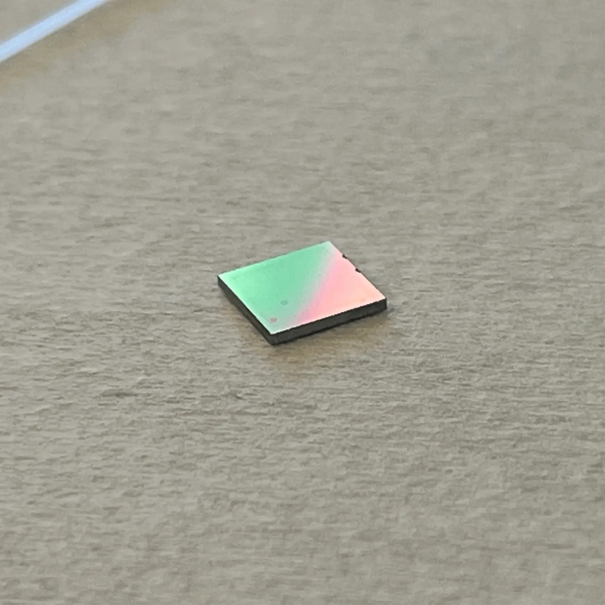
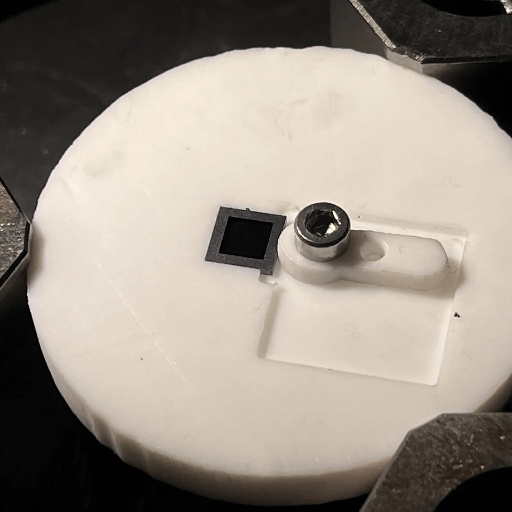
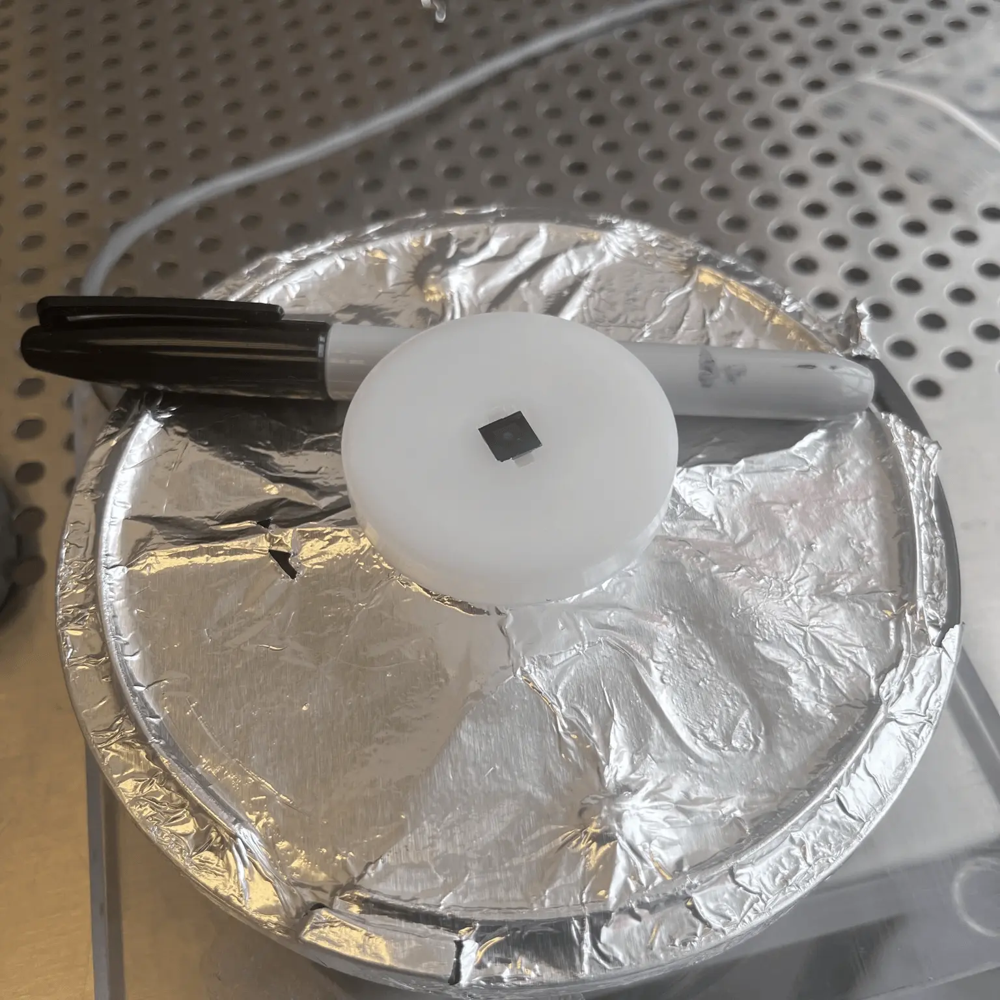
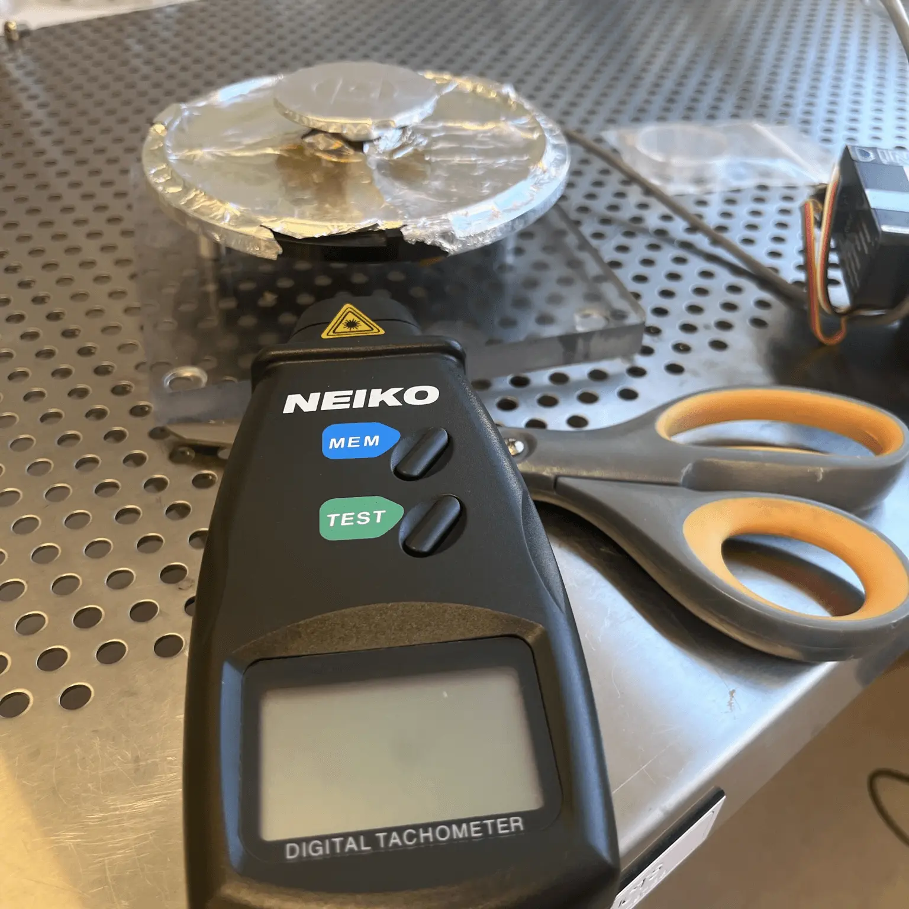
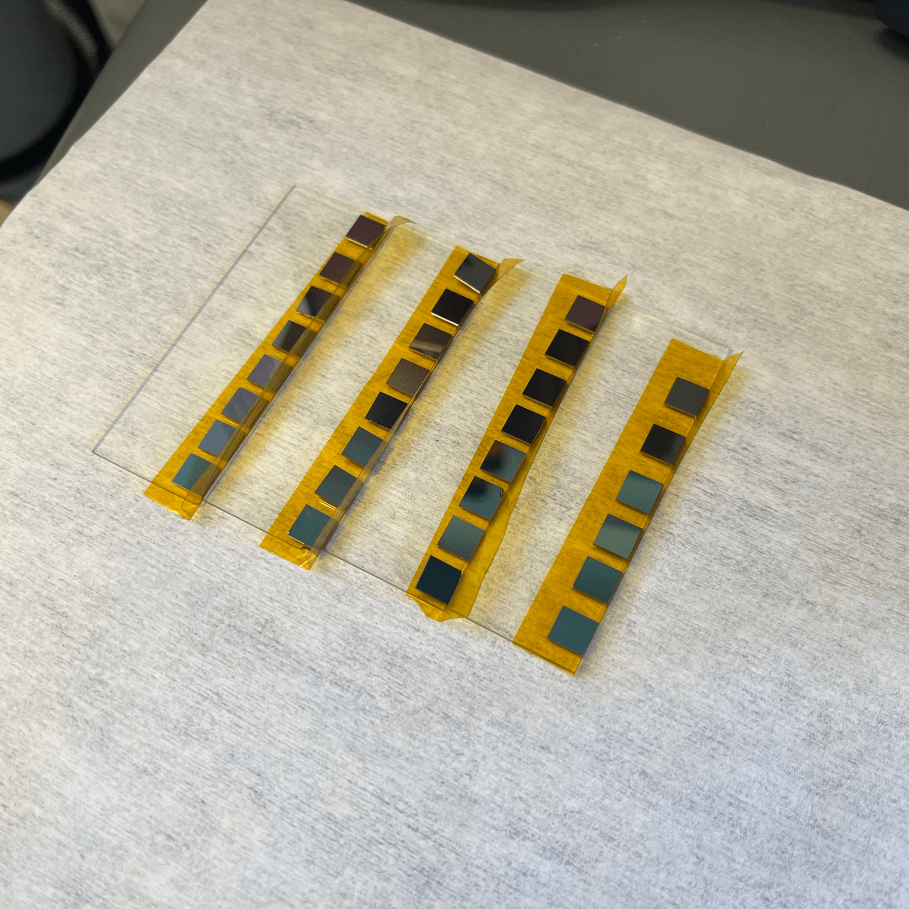
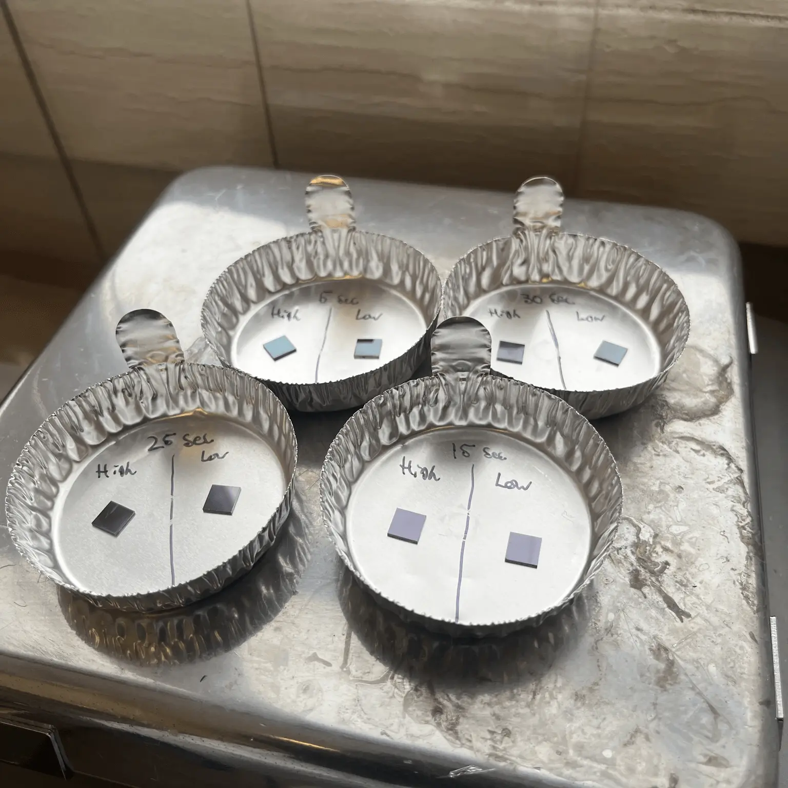
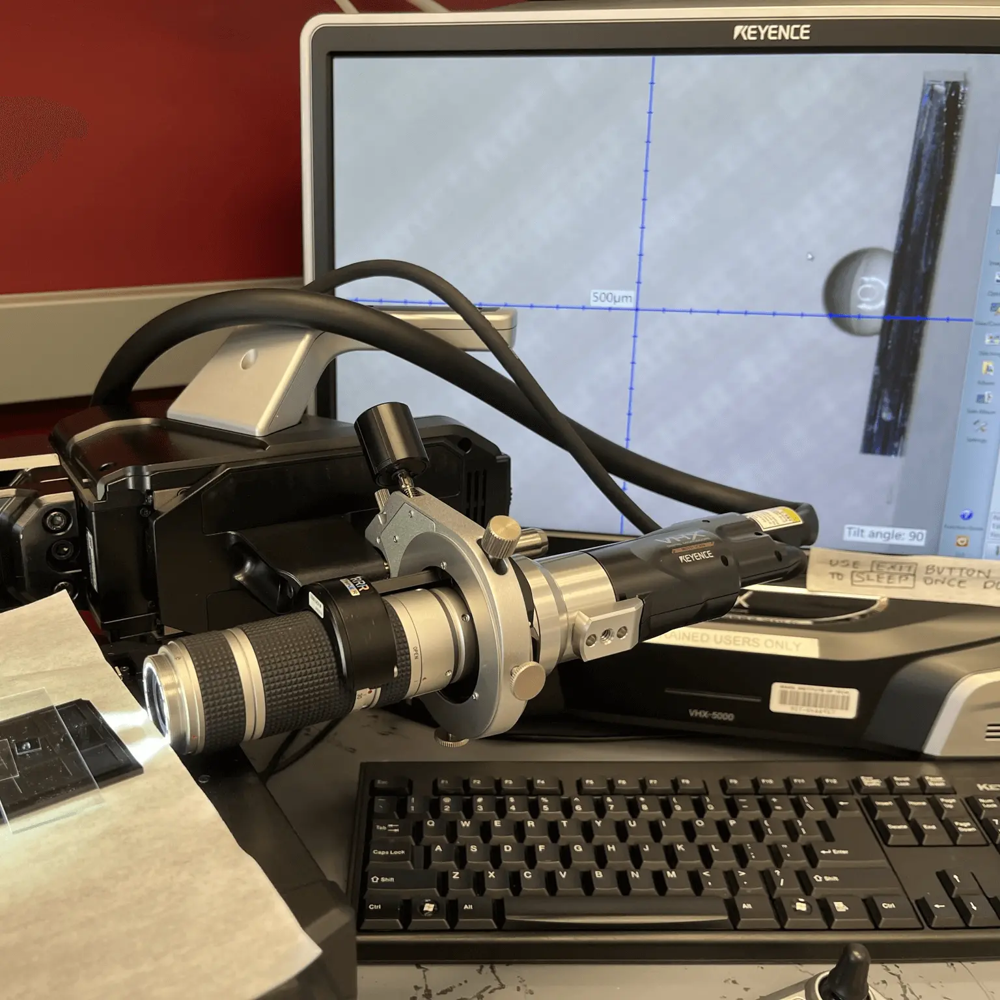
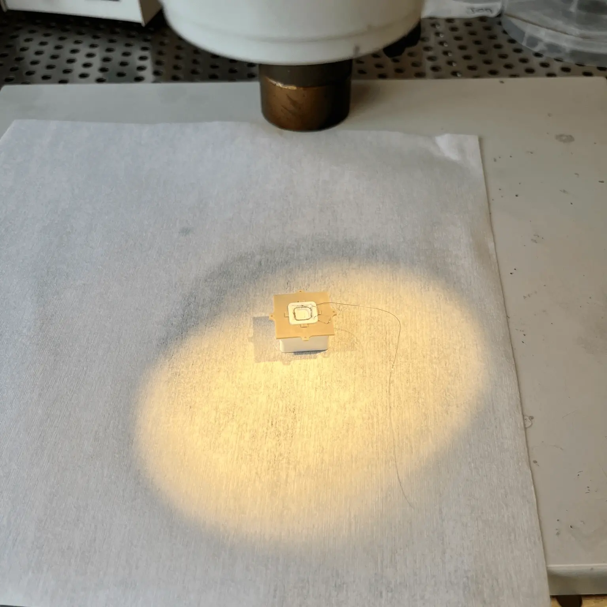
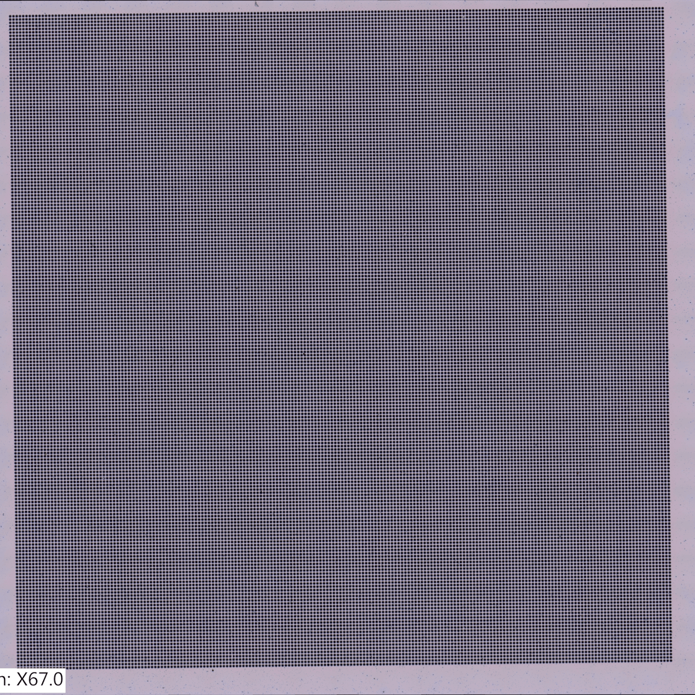

1- Chip with defective non-uniform surface finish

2- First iteration of spin coating jig

3- Final, improved spin coating jig

4- Tachometer to verify spin coating procedure

5- Batch of testing valves before ashing
6- Blanks being ashed

7- Curing precursor valves on hotplate

8- Measuring contact angle with digital microscope setup

9- Thruster tank mid-assembly

10- Valve capillary array
Previous
Next
During my IAP
and Spring semester of 2023 (Jan-May), I was helping out in the MIT Space Propulsion Lab (SPL) as a continuation of my UROP work that
I've been doing since Jan. 2022. For this more recent work, I was helping to refine the method that SPL uses to coat the special electrowetting
valves used in their electrospray ion thrusters. The information is technically proprietary, so to respect that, I'll give a brief overview of my work.
I also published this project
as a UROP summary in the spring 2023 MIT Undergraduate Research Journal (vol. 45). Check it out here on page 27: MURJ.
Initially, my main focus was to
design and fabricate a new jig (photos 2 & 3) for the spin coating process SPL uses to coat the valves.
The spin coating setup ensures that a thin layer of a chemical, Flouropel, is deposited on the active surface of the valve.
The valves work because
they're these silicon chips (MEMS) with hundreds of tiny capillaries microns in diameter in a square pattern (Photo 10),
and we coat them in a particular chemical called Flouropel. Once cured onto the silicon valves, the Flouropel increases the
hydrophobicity of the valve's surface, meaning that the fuel for the thruster, the ionic liquid, cannot pass through the tiny
capillaries going through the valve. It comes down to how the fluid interacts with the surface of the valve, but a higher
contact angle (what I'm measuring in photo 8) is better.
And because of the
unique properties of Flouropel, if we apply a voltage across the ionic liquid and the valve, we can change the interaction between the valve and the thruster fuel.
This change from electricity is what makes the valves electrowetting. The electrowetting property of the valve then allows someone controlling the satellite to
turn on the thruster by applying a voltage to the valve and allowing the ionic liquid fuel to reach the electrospray thruster.
After I made
the new spin coating jig, I then worked to optimize the spin coating procedure SPL was using to find the spin coating settings
that produced the largest contact angle. A larger contact angle is preferable since the angle size correlates to how reliable
the valve is in preventing ionic liquid from traveling through the thruster. So basically, I was going through the rigorous cleaning
and coating process for 34 valves and took over 354 contact angle images to accurately characterize what speed and process was optimal
to coat a valve. The intent is that SPL can use the information I gathered this semester to produce the valves needed for the next important mission:
STEP-1.
The final part of
this UROP project was to test one of the valves coated to the optimized procedure in environmental conditions to see whether or not the valve
would prevent the thruster from failing during a spacecraft launch. Unfortunately, since there were a few blocks to this and it was the end
of the semester, I couldn't certify a valve experimentally. But I'm still looking forward to working with SPL in future semesters for other UROP projects.